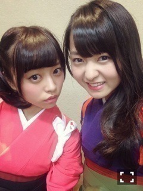
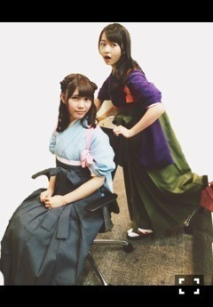

| 2014/09 27 Sat | 糸を噛み切れ！604回目 |
おはようこんにちは
遅くなりました。

ひとつのイベントとして
定番化しているお茶会...
今回も楽しかったです！
当たった方おめでとうございました！

かるた大会での袴。
紫×カーキ×朱色
古風な組み合わせ。
朱色がよい！素敵！

私のこの色の組み合わせ
川後の予想的中だったらしい笑
水色×ピンクは乙女で可愛らしい！
袴着てかるた大会良いな。
かるた大会に当たった方
びっくりしたろうな。
着るの大変だけど、
和装好きだ。
お茶会、かるた大会とやったけど、
メンバーそれぞれで特徴があって
見てて面白いみたい。
私の机では静かに
神経衰弱やってました笑
かるたも真面目にやりました！
普通のかるたを読むと思ったら
乃木坂オリジナルのかるただった。
ゆるゆるでなんか面白かった〜
話題ふってくれて
ありがとうございました！
個人pv予告公開！
見てない方はぜひ！
新しいジャンルに挑戦。
監督は中村浩紀さん！
実はまだ本編見てないんだ泣
早く見たいよ〜どきどき

発光少女改造途中。。。
のぎ天も公開！
精神鍛えられました。
後悔した分、アンダーライブに
ぶつけにいきます。
滝行メンバー本当にお疲れ様でした！
次回の街ブラもお楽しみに♪
今日は全国握手会！
ひなちまと2人では初めてかな？
ひなちまファンのみなさん
よろしくお願いします。
ひなちまとは家族ぐるみで
仲良しなのよ♪
ぜひ来てくださいねっ
一緒に楽しもうねー
まりか
コメント(456)
2014/09/27 11:48